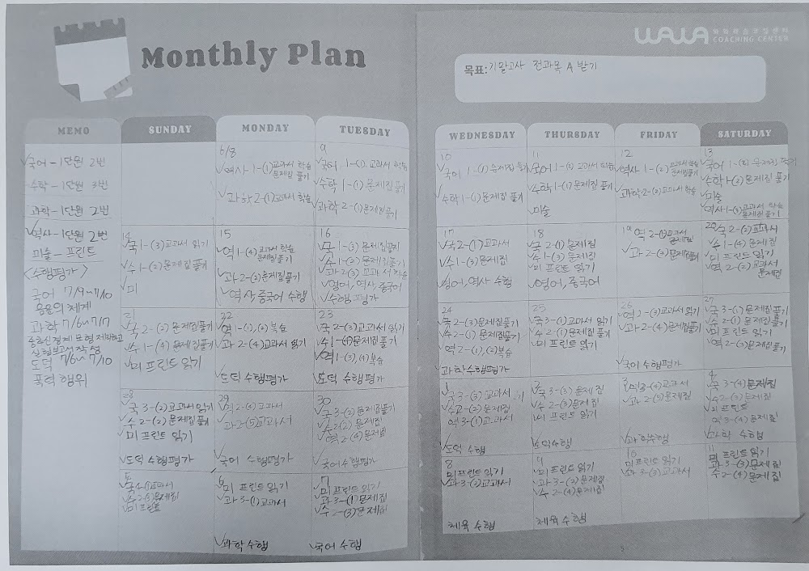
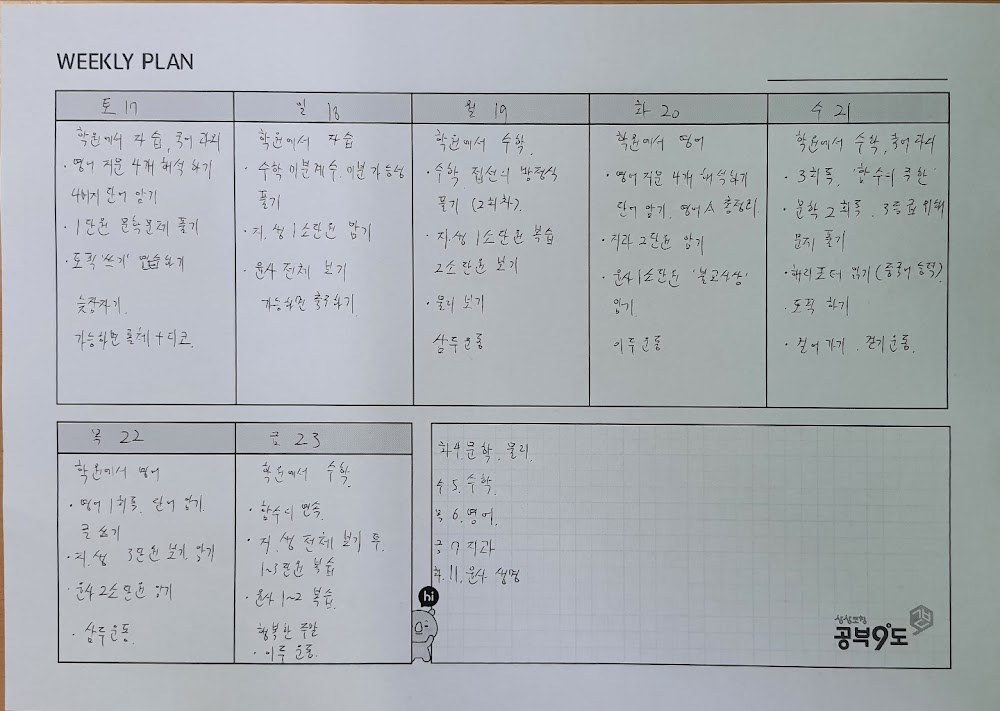

안녕하세요, 금천구 시흥동 와와학습코칭 금천점입니다. 이번 주 저희 센터의 영어·수학 수업 현황을 학부모님들께 전해드립니다. 탑동초, 동일중, 세일중부터 금천고, 문일고까지 다양한 학년의 학생들이 함께 공부하는 현장을 담았습니다.
학년별 맞춤 코칭
금천점은 초·중·고 학생이 함께 다니는 만큼, 학년과 수준에 따라 학습 방향을 다르게 잡습니다. 초등 학생은 공부 습관과 기초 개념을, 중등 학생은 내신 대비와 서술형을, 고등 학생은 수능형 문제와 내신을 동시에 준비합니다.
이번 주 중등 학생들은 1학기 내신을 되짚으며 자주 틀린 유형을 정리했고, 고등 학생들은 여름방학 동안 이어갈 개념 복습 로드맵을 코치 선생님과 함께 세웠습니다.

영어·수학, 스스로 이해하는 시간
와와의 수업은 '많이 듣는' 수업이 아니라 '스스로 이해하고 정리하는' 수업입니다. 이번 주에도 학생들은 배운 내용을 자기 말로 설명하고, 틀린 문제는 오답 노트에 정리하며 다시 도전했습니다.
- 영어 — 문법 포인트 정리 + 지문 스스로 해석하기
- 수학 — 개념 설명 → 유형 연습 → 오답 점검
- 매일 학습 플래너로 그날의 목표와 실행 점검

스스로 공부하는 힘을 키웁니다
금천점은 아이가 혼자서도 공부할 수 있는 힘을 키우는 것을 목표로 합니다. 매일 등원하면 스스로 계획을 세우고, 하원 전 코치 선생님과 점검하는 작은 루틴이 쌓이면, 시험 기간에도 흔들리지 않는 공부 습관이 만들어집니다. 성적보다 먼저 달라지는 태도를, 저희가 매일 곁에서 지켜봅니다.
와와학습코칭 금천점 인근 학교
시흥동 와와학습코칭(와와학습코칭 금천점)은 인근 학교 학생들의 내신·수능을 함께 준비합니다. 아래 학교에 다니는 학생이라면 영어학원·수학학원·국어학원을 따로 찾을 필요 없이, 가까운 우리 센터에서 과목별 1:1 자기주도학습 코칭을 받을 수 있습니다.